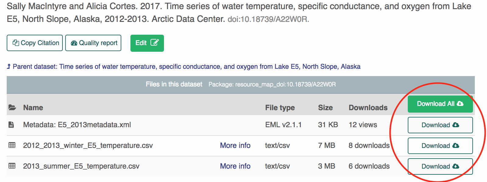
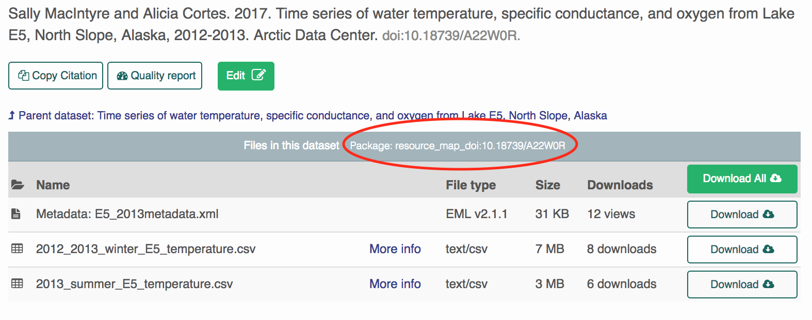

download_ADC_packages.RmdMac Users:
First install the following packages:
install.packages("devtools")
devtools::install_github("ropensci/EML")
devtools::install_github("NCEAS/datamgmt")
library(datamgmt)
library(dataone)PC Users:
We currently have issues installing ‘datamgmt’ on PCs. Instead of installing the package, we can load the functions directly into your global environment by copy-pasting. First install the following packages:
install.packages("devtools")
devtools::install_github("ropensci/EML")
devtools::install_github("NCEAS/arcticdatautils")
install.packages("dataone")
install.packages("magrittr")
library(dataone)
library(magrittr)Source (copy-paste into your R console) the file (https://github.com/dmullen17/work-samples/blob/master/R/wg_helpers.R) Note: This concludes the differences between Mac and PC installs
Next, we need to specify which DataOne Member Node we want to interact with. The following code specifies the Arctic Data Center. Most of the functions that we use specificy the mn as the first argument. First, we specify the coordinating node and then its corresponding member node.

write_to_csv - writes each data.frame to a csv in the specified download_directory
prefix_file_names - prepends the DOI identifier to each filedownload_directory - required if write_to_csv = TRUE
attributes <- get_eml_attributes_url(mn,
"https://arcticdata.io/catalog/#view/doi:10.18739/A22W0R",
write_to_csv = TRUE,
prefix_file_names = TRUE,
download_directory = "/home/dmullen/downloads") 
prefix_file_names - prepends the DOI identifier to each file.download_column_metadata - downloads column metadata to csv’s.convert_excel_to_csv - attempts to convert excel workbooks in the package to csvs. Not recommended if the csv’s are already present in the package.download_child_packages - downloads any “Nested” Data Packages associated with the Data Package.download_package(mn,
"resource_map_doi:10.18739/A22W0R",
download_directory = "/home/dmullen/downloads",
prefix_file_names = TRUE,
download_column_metadata = TRUE,
convert_excel_to_csv = FALSE,
download_child_packages = TRUE)We can download multiple data packages by specifying multiple resource to the function download_packages. Note the s!
**Tip:** If you want to download Data Packages that are nested under a common Data Package, you can use the common “parent” resource map rather than copying pasting multiple resource maps into R.
download_packages(mn,
c("resource_map_doi:10.18739/A21G1P", "resource_map_doi:10.18739/A2RZ6X"),
"/home/dmullen/downloads",
prefix_file_names = TRUE,
download_column_metadata = TRUE)Suppose we want to download this package from LTER: https://search.dataone.org/#view/https://pasta.lternet.edu/package/metadata/eml/knb-lter-ntl/276/13
We first need to tell R that we’re changing member nodes. The fastest way of doing this is to reset your mn with the guess_member_node function. Note: This function accepts metadata and resource map pids, or DataOne package URLs as inputs
# The following three calls return the same member node (mn)
# Metadata pid input:
mn <- guess_member_node("https://pasta.lternet.edu/package/metadata/eml/knb-lter-ntl/276/13")
# Resource map pid input:
mn <- guess_member_node("doi:10.6073/pasta/97c6d83a5f6a0a065ef3209fcb491b6e")
# Package URL input:
mn <- guess_member_node("https://search.dataone.org/#view/https://pasta.lternet.edu/package/metadata/eml/knb-lter-ntl/276/13")
# We can now use any of the above functions:
get_eml_attributes_url(mn, "https://search.dataone.org/#view/https://pasta.lternet.edu/package/metadata/eml/knb-lter-ntl/276/13")